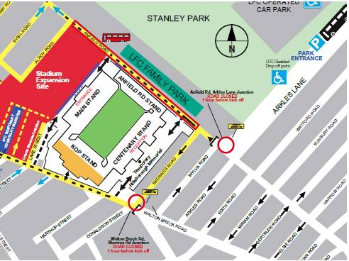
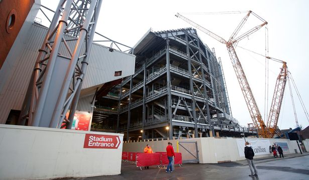

-
You are here:
- Home
- Fans
- Fan Experience


 Anfield Stadium Access Update 2015/16 Season
Fans making their way to Anfield this season can expect to see some significant changes as progress continues on the expansion of the Main Stand and the wider regeneration plan for the area.
- Anfield Stadium expansion and wider regeneration works continue – Ongoing work means changes to some access routes in and around Anfield Stadium
- New road closure times for Walton Breck Road (1 hour prior to kick-off)
- No pedestrian access is permitted on Baltic Street, Bagnall Street.
- The temporary closure of Anfield Road will pause on a matchday when routine closures will apply (1 hour prior to kick-off)
- A temporary hospitality facility will be situated in a purpose built marquee located between Tinsley Street and Gilman Street

Accessing the Stadium on a match-day
If you’re attending a match at Anfield, before you travel we’d encourage all supporters to:
- Check the date and time of the fixture you’re attending, as these are subject to change throughout the season due to TV scheduling
- If you’re an Official Member, check your Members Card has been activated for that match prior to the game, by visiting you account
- Check the stand and turnstile that you will need to enter the stadium before you arrive. This will be clearly indicated on your Season Ticket Card / Official Members SMS and email confirmation/ or paper ticket).
To see a map of the stadium and turnstiles please click here.
ANFIELD GUIDES
Visiting Anfield Guide
Liverpool Football Club takes great pride in welcoming visitors to
our ground and so we have created a 'Visiting Anfield Guide' to make
your visit as easy as possible. Our ‘Visiting Anfield’ guide
provides useful information on how to get to Anfield, things to do
in and around the stadium and places to stay if you are visiting
from further afield.
Just click
here to view the guide or printout and bring with you when you
visit.
Accessibility Guide
LFC prides itself on being inclusive and working with all its
supporters. We recognise that disabled supporters may need
assistance to fully enjoy the experience at Anfield Stadium, and so
we have created an 'Accessibility Guide' to provide all of the
information that you may need, to make your experience more
enjoyable in one place.
Just click
here to view the guide or printout and bring with you when you
visit.
BY TRAIN
Lime Street Railway Station is two miles from Anfield. On matchdays you can use the Merseyrail network to link with the Soccerbus service from Sandhills Station on the Northern line or you can take a taxi from Lime Street. For more information on train times click here
The Soccerbus runs from Sandhills Station, on the Merseyrail Northern Line, to Anfield for all Liverpool home Barclays Premier League and cup matches The Soccerbus runs two hours before each match (lastbus from Sandhills Station is approximately 15 minutes before kick-off) and for 50 minutes after the final whistle (subject to availability) Chat conversation end
BY TAXI
Taxis from the city centre to Anfield usually cost between £7-£9.
Post-match taxis can be difficult to locate and we would therefore
suggest fans consider alternative travel arrangements such as the
ones listed below (bus /soccer bus.)
Taxi One operates a taxibus service from St Johns Lane,
Liverpool city centre direct to Anfield. A frequent service operates
from 3 hours prior to kick off.
Taxi One return service will operate from the corner of
Anfield Rd/ Sleepers Hill opposite the Isla Gladstone conservatory
back to the city centre.
BY BUS AND SOCCERBUS
From Liverpool City Centre, take the 26 or 27 from Liverpool ONE bus
station, 17 from Queen Square Bus Station or the 917 from St Johns
Lane, directly to the ground. The 68/168, which operates between
Bootle and Aigburth, and the 14 and 19 (from Queen Square) stop a
short walk away from the ground.
Once the match is finished the 917 bus picks up near the
junction of Walton Breck Road and Sleepers Hill returning to the
City Centre.
The 501 football service is also available and operates
direct to Lime Street Station (Skelhorne Street) from Walton Breck
Road for up to two hours after the final whistle. On the second and
subsequent trips, the bus picks up at the church opposite the Kop.
Adult fares are £2, Children £1.
For more information on bus times click
here
BY BIKE
If you are cycling to the game, the LFC Cycle Hub is a FREE and
secure service to store your bike, brought to you by Liverpool
Football Club and Cycling Projects.
The LFC Cycle Hub is situated in Stanley Park Car Park, a
few minutes’ walk from the Anfield Road end of the ground. Simply
ride to the Cycle Hub, where staff will register and secure your
bike. You will be given a receipt which must be presented on
collection. Cycle Hub can provide locks but you can use your own if
you wish.
BY AIR
Liverpool John Lennon Airport is approximately 10 miles from the
ground, and taxis should be easily obtainable.
Alternatively, you can catch the 80A or 86A bus from the
airport to Liverpool South Parkway bus/rail interchange and ask for
a rail ticket to Sandhills Station to connect with the Soccerbus
service or Route 500, which is a ‘Limited Stop’ service which runs
through to Liverpool ONE bus station.
BY CAR
Matchday parking - There are a number of paying car
parks near to Anfield stadium including.
St Domingo Car Park - Postcode L5 0RS. For its location
click here.
Please note: these car parks are only
available on matchdays and can only be accessed three hours before
each game.
There are a limited number of Anfield Road passes
available for over 65s (this is due to a suggestion made at the
first LFC Supporters Committee meeting with the club). In order to
purchase a pass, supporters must be registered with the club as
being over 65 and be attending the game they are purchasing for.
Please call 0843 170 5555 for more information.
Non Matchday Parking - If you are
attending a tour on a non matchday, you can park in our manned car
park in the Centenary Stand. Please be aware that spaces are limited
and available on a first come first served basis. We advises all
fans to park in official manned car parks only.
From the North - Exit the M6 at junction
28, follow signs for Liverpool A58 into Walton Hall Avenue, drive
past Stanley Park and turn left into Anfield Road where you will see
the ground.
From the South - Take the M62 to the end
of the motorway, turn right into Queens Drive A5058, after 3 mile
turn left into Utting Avenue, after 1 mile turn left into Anfield
Road where you will see the ground.
From the East - Go via the Mersey Tunnel
for which you will have to pay a toll, follow signs for Preston
A580, you should come to Walton Hall Avenue, just before you get to
Stanley Park turn left into Anfield Road where you will see the
ground.
STAYING IN LIVERPOOL
Whether you want a posh bed for the night, a country house hotel or
a groovy themed room, Liverpool has it all.
The City Region has an impressively broad range of
accommodation, from award-winning guest houses to upmarket boutique
hotels.
For
more information click here >>